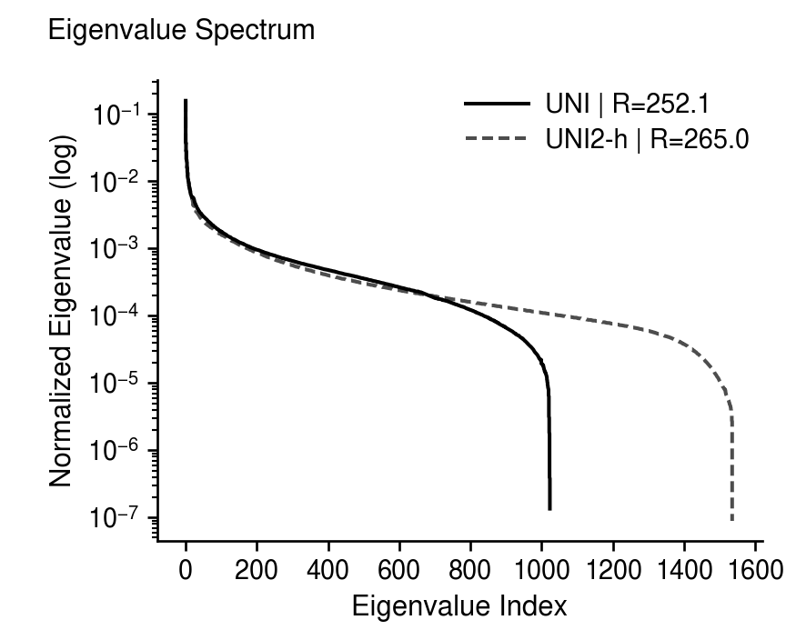
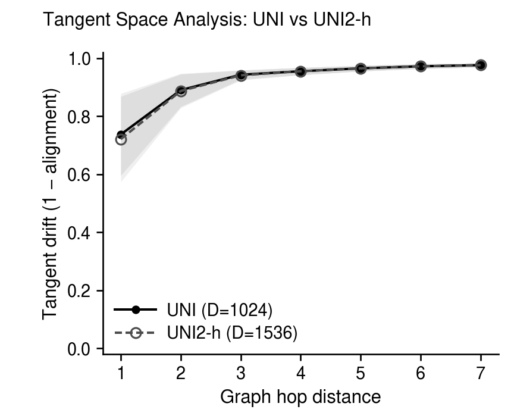
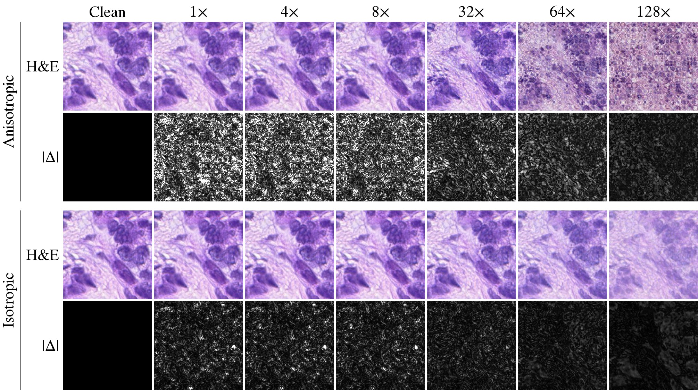

TL;DR
Existing state-of-the-art histopathology generative models2,3 use VFMs only as conditioning, and most of their output diversity comes from that signal. STREAM instead makes the ℓ2-normalized4,5 patch tokens of a frozen VFM the latent space itself and learns their distribution there, with Riemannian flow matching (RFM)6 on the hypersphere. STREAM makes two novel contributions: a stochastic bridge added to Diffusion Transformer (DiT)7 training and anisotropic noise added to decoder training. With these two contributions, and with every baseline comparison method using the same UNI encoder, STREAM achieves state-of-the-art generation Fréchet Inception Distance (gFID)8 on The Cancer Genome Atlas (TCGA) breast (TCGA-BRCA)9 and colorectal (TCGA-COADREAD)10 cohorts and on SPIDER-skin11.
Why generate in VFM token space?
Histopathology VFMs12,13 like UNI are widely used for downstream tasks such as classification, segmentation and retrieval. However, they are rarely used in histopathology image generation.
Synthetic histopathology images can potentially address the growing data demands of foundation models14,15 and patient-privacy concerns16.
Previous state-of-the-art generative models such as ZoomLDM and PixCell use VFMs only as conditioning. Therefore, they display conditioning-dominated diversity: on TCGA-BRCA, 62–75% of their output diversity comes from that conditioning signal rather than from the learned latent space.
Conditioned generative modelse.g. ZoomLDM, PixCell
- VFM embedding c
- Diffusion in a VAE latent
- VAE decoder
- Image
Diversity comes mostly from c, and sampling needs a VFM embedding.
STREAMunconditional
- Uniform noise on the sphere
- Riemannian flow in VFM token space
- Decoder
- Image
No conditioning signal: sampling needs no image or embedding as input.
The VFM token space is the right latent space
VFM features carry much more semantic information compared to variational autoencoder (VAE) features. A linear probe on SPIDER-breast (benign vs malignant) reaches an area under the receiver operating characteristic curve (AUROC) ≥ 0.995 on VFM features and ≤ 0.640 on VAE features.
| Encoder | AUROC bar | AUROC |
|---|---|---|
| VFM features | ||
| UNI | 0.995 | |
| UNI2-h | 0.997 | |
| VAE features | ||
| PixCell VAE | 0.640 | |
| ZoomLDM VAE | 0.624 | |
Why Riemannian Flow Matching for Histopathology Image Generation?
We ℓ2-normalize the VFM tokens so that every token lies on the unit hypersphere. Measured on TCGA-BRCA, their tangent drift22 is high (above 0.72 at hop 1), so straight-line interpolants leave the manifold, and Riemannian flow matching on the hypersphere is the better-matched formulation.


The eigenvalue spectrum shows why we use UNI: UNI2-h gains only 5% more effective rank (265 vs 252) for 50% more embedding dimension (1536 vs 1024).
So a generative model should use the VFM token space itself as the latent space and learn the distribution there.
And unconditional generation is the right fit: conditioning needs a real image's VFM embedding or labels at inference, especially since annotation is scarce in the histopathology domain.23,24
Method at a glance
![Overview of STREAM in two stages. H&E patches pass through a frozen UNI encoder, marked with an ice-blue snowflake, into a grid of patch tokens. Stage 1: the tokens lie on a unit hypersphere, where a trainable DiT, marked with a fire-coloured flame, learns to move a point from x0 to x1 along the SLERP geodesic rather than the dashed Euclidean chord; an inset shows Gaussian noise added in the tangent plane at the geodesic point mu_t and mapped back onto the sphere by the exponential map (Exp) to give x_t. Stage 2: the SVD of the DiT's velocity-field Jacobian splits directions into high-response directions U_H (red) and low-response directions U_L (blue), which shape anisotropic noise on a tangent sheet, elongated along U_L, used to train a decoder, also marked with a flame. Generation: a noise ball of points on the sphere is transported by the DiT and decoded by the Decoder into the generated H&E tiles.](assets/img/figure1.png)
Stochastic perturbation bridge
Standard Riemannian flow matching gives no general rectifiability guarantee25, so we perturb its geodesic interpolant with a stochastic bridge. Concretely, during training, each patch token travels from noise to data along the spherical linear interpolation (SLERP) geodesic on the hypersphere, perturbed by tangent Gaussian noise that the exponential map (Exp) carries back onto the sphere; its scale σ(t) = σmax sin(πt) vanishes at both ends. The perturbation gives every intermediate marginal full support on the sphere.
μt = SLERP(x0, x1, t) xt = Expμt(σ(t) ε)
Anisotropic decoder
Representation Autoencoder (RAE)20 is essentially the Euclidean baseline of our work as it utilizes VFM features as the diffusion latent. Its isotropic decoder that generates images treats every token direction equally, yet not all directions matter equally for generation: UNI's effective rank is 252 while its token dimension is d = 1024. We therefore train the decoder with anisotropic noise, choosing directions from the trained DiT's velocity-field Jacobian. The noise is shaped by the singular value decomposition (SVD) of that Jacobian: small noise along the high-response directions UH to preserve reconstruction fidelity, and large noise along the low-response directions UL, where the decoder spends its robustness budget.
Σnoise = σH2 UHUH⊤ + σL2 ULUL⊤, σH ≪ σL
State-of-the-art generation quality on three separate datasets
Every method is retrained with the same frozen UNI encoder (baselines: ZoomLDM, PixCell, RAE, SVG26, REPA-E27). STREAM has the lowest generation FID on all three datasets.
Show as a table
| Method | TCGA-BRCA | TCGA-COADREAD | SPIDER-skin |
|---|---|---|---|
| STREAM | 6.16 | 7.68 | 9.19 |
| ZoomLDM | 7.43 | 8.09 | 11.14 |
| RAE | 15.84 | 19.64 | 16.52 |
| SVG | 17.37 | 23.64 | 22.24 |
| REPA-E | 28.57 | 13.41 | 18.00 |
| PixCell | 104.18 | 127.24 | 453.28 |
Efficient and fast inference
On TCGA-BRCA, STREAM at a number of function evaluations (NFE) of 26 already beats RAE and SVG at NFE 50, and at NFE 50 it is also the cheapest of the three per image.
Show as a table
| NFE | STREAM | RAE | SVG |
|---|---|---|---|
| 6 | 49.70 ± 0.09 | 55.03 ± 0.05 | 55.80 ± 0.07 |
| 10 | 27.05 ± 0.06 | 29.87 ± 0.06 | 30.53 ± 0.18 |
| 26 | 9.31 ± 0.02 | 18.27 ± 0.04 | 18.82 ± 0.15 |
| 50 | 6.16 ± 0.04 | 15.88 ± 0.04 | 17.52 ± 0.14 |
Show as a table
| Model | ms / image | TFLOPs / image |
|---|---|---|
| STREAM | 94.8 | 12.14 |
| RAE | 156.7 | 16.09 |
| SVG | 175.0 | 24.16 |
Ablations on STREAM's components
Stochastic bridge and anisotropic decoder
The two components are superadditive: together they improve reconstruction Fréchet Inception Distance (rFID) and gFID far more than the sum of their individual contributions. Both components are crucial: standard RFM with an isotropic decoder (top left) does not perform better than previous existing works like ZoomLDM.
| Isotropic decoder | Anisotropic decoder | |
|---|---|---|
| No bridge | rFID6.51gFID9.07 | rFID5.02gFID8.27 |
| Bridge | rFID6.51gFID9.37 | rFID3.52gFID6.86STREAM |
The decoder's directional preference tracks superadditivity
We next examine how and why this superadditivity arises. It has an empirical explanation in the decoder's directional preference. Rdec = LUH / LUL compares the decoder's Learned Perceptual Image Patch Similarity (LPIPS)28 sensitivity along the high-response directions UH and the low-response directions UL. Anisotropic training tilts the decoder's preference toward UH, and STREAM (bridge + anisotropic decoder) ends up with the strongest UH preference, compared with no bridge or the isotropic decoder.
Show as a table
| Rdec | Isotropic | Anisotropic |
|---|---|---|
| STREAM (k = 64) | 0.42 | 3.41 |
| STREAM (k* = 236) | 1.12 | 2.31 |
| No bridge (k = 64) | 0.62 | 2.50 |
| No bridge (k* = 232) | 1.28 | 2.01 |
With the bridge, anisotropic training shifts Rdec further toward UH than without it at both splits (0.42 → 3.41 vs 0.62 → 2.50 at k = 64, 1.12 → 2.31 vs 1.28 → 2.01 at k∗), so the largest shift belongs to STREAM, consistent with its superadditive rFID and gFID gains.
Decoder response visualized in pixel space
Under a perturbation inside the top-64 subspace (UH at k = 64), the anisotropic decoder separates from the isotropic one and responds more strongly. On UL (figure not shown here, refer to main text), no visual difference between the two decoders is observed.

References (28)
- 1Chen et al., Towards a general-purpose foundation model for computational pathology, Nature Medicine 2024.
- 2Yellapragada et al., ZoomLDM: Latent Diffusion Model for multi-scale image generation, CVPR 2025. arXiv:2411.16969
- 3Yellapragada et al., PixCell: A Generative Foundation Model for Digital Histopathology Images, arXiv preprint 2025. arXiv:2506.05127
- 4Kumar and Patel, Learning on the Manifold: Unlocking Standard Diffusion Transformers with Representation Encoders, ECCV 2026. arXiv:2602.10099
- 5Chang et al., HAE: Hyperspherical Autoencoder for High-Fidelity Image Reconstruction and Generation, arXiv preprint 2026. arXiv:2601.22904
- 6Chen and Lipman, Flow matching on general geometries, ICLR 2024. arXiv:2302.03660
- 7Peebles and Xie, Scalable diffusion models with transformers, ICCV 2023.
- 8Heusel et al., GANs trained by a two time-scale update rule converge to a local Nash equilibrium, NeurIPS 2017.
- 9The Cancer Genome Atlas Network, Comprehensive molecular portraits of human breast tumours, Nature 2012.
- 10The Cancer Genome Atlas Network, Comprehensive molecular characterization of human colon and rectal cancer, Nature 2012. doi:10.1038/nature11252
- 11Nechaev et al., SPIDER: A Comprehensive Multi-Organ Supervised Pathology Dataset and Baseline Models, arXiv preprint 2025. arXiv:2503.02876
- 12Zimmermann et al., Virchow2: Scaling Self-Supervised Mixed Magnification Models in Pathology, arXiv preprint 2024. arXiv:2408.00738
- 13Xu et al., A whole-slide foundation model for digital pathology from real-world data, Nature 2024.
- 14Lu et al., A visual-language foundation model for computational pathology, Nature Medicine 2024.
- 15Xiang et al., A vision-language foundation model for precision oncology, Nature 2025.
- 16Wang et al., Self-improving generative foundation model for synthetic medical image generation and clinical applications, Nature Medicine 2025.
- 17Rombach et al., High-resolution image synthesis with latent diffusion models, CVPR 2022.
- 18Ho et al., Denoising diffusion probabilistic models, NeurIPS 2020.
- 19Chen et al., Aligning Visual Foundation Encoders to Tokenizers for Diffusion Models, ICLR 2026.
- 20Zheng et al., Diffusion Transformers with Representation Autoencoders, ICLR 2026. arXiv:2510.11690
- 21Chen et al., Masked Autoencoders Are Effective Tokenizers for Diffusion Models, ICML 2025.
- 22Xiong et al., Exploiting Low-Dimensional Manifold of Features for Few-Shot Whole Slide Image Classification, ICLR 2026.
- 23Campanella et al., Clinical-grade computational pathology using weakly supervised deep learning on whole slide images, Nature Medicine 2019.
- 24van der Laak et al., Deep Learning in Histopathology: The Path to the Clinic, Nature Medicine 2021.
- 25Hertrich et al., On the relation between rectified flows and optimal transport, arXiv preprint 2025. arXiv:2505.19712
- 26Shi et al., Latent Diffusion Model without Variational Autoencoder, arXiv preprint 2025. arXiv:2510.15301
- 27Leng et al., REPA-E: Unlocking VAE for End-to-End Tuning with Latent Diffusion Transformers, ICCV 2025.
- 28Zhang et al., The unreasonable effectiveness of deep features as a perceptual metric, CVPR 2018.
BibTeX
If you find our work useful, please cite it using the BibTeX below.
@inproceedings{cho2026stream,
title = {{STREAM}: Stochastic Riemannian Flow Matching with Anisotropic Decoder for Digital Histopathology Image Generation},
author = {Cho, Won June and Jeong, Daeky and Lim, Hyeongyeol and Yoon, Hongjun},
booktitle = {The Fortieth Annual Conference on Neural Information Processing Systems},
year = {2026},
url = {https://arxiv.org/abs/2606.07036}
}